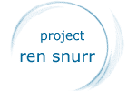
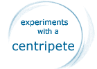
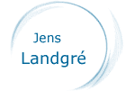

the VORTEX WORLD
| water treament and theories | |
| This page treats our and other peoples work with Viktor Schaubergers methods of treating water in general and purification of water in special. | |
 |
Our recent work, Project RenSnurr has it's ground in the experiments that was performed in the Technical University in Stuttgart 1952 monitored by Viktor Schauberger and Professor Pöpel. You can read more about our intentions with our work and what it is about. |
Our work was finished by the end of October 1997 and the 8:th of November we held a demonstration in Malmö. During this meeting the report regarding this work was spread to the participants. You can read the first introducing chapter here. |
|
 |
My friend Gudmund Rapp (Gugge) has performed a pioneering work with the Aquagyro (among other work). He has also built several types of devices, some of them are easy to design. Read more about his work with the Centripete, here ! |
| "Water is a mysterious substance yet we take it for granted. It is the most misunderstood and most abused element on Earth. Its chemical formula is H2O but that isn't all there is to it. Water is alive. It is the lifeblood of the Earth Water has its own living energy, and if water dies, our Earth dies with it." Read more about Water as the Magic Source of Life by Elan SunStar |
|
 |
Jens Landgré has gathered many translations of Viktor Schauberger's writings. I recomend You to take a look on his site too,You can also find some nice pictures here . |
the Malmö group l Viktor Shauberger l water treatment l the repulsin l energy production l more links